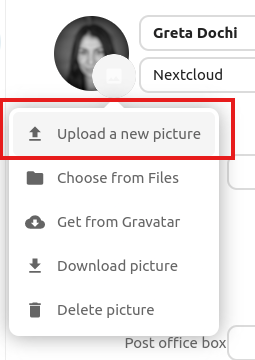
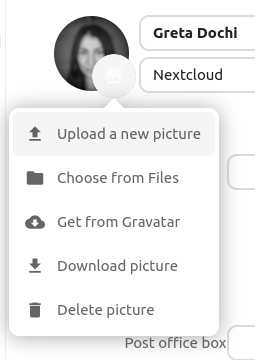
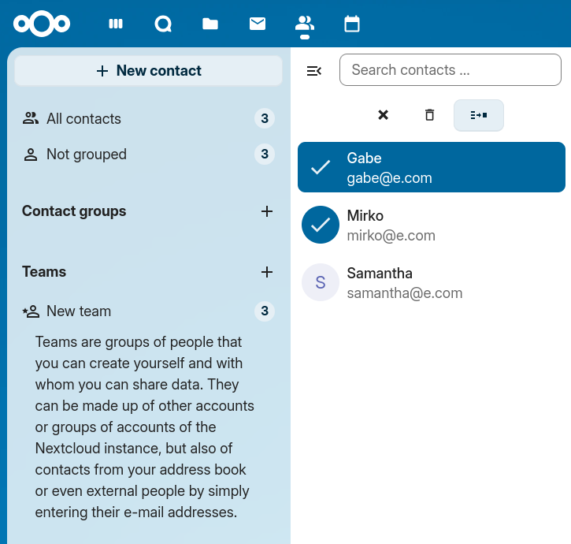
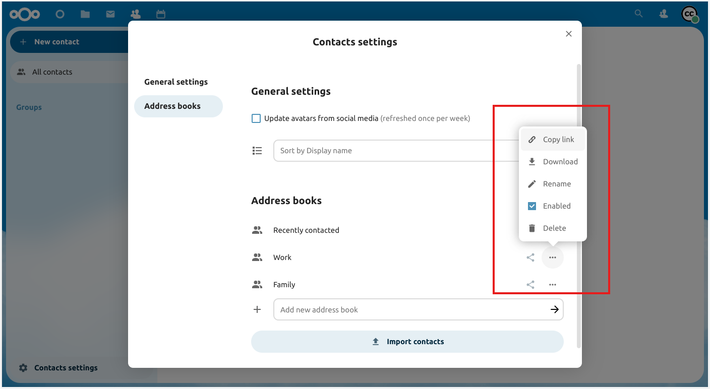

Appen Kontakter er ikke aktiveret som standard i Nextcloud 36 og skal installeres separat fra vores App Store.
Kontakter i Nextcloud ligner andre kontaktapps på mobilen, men har flere funktioner. Dette afsnit gennemgår de grundlæggende funktioner, der hjælper dig med at holde din adressebog ved lige.
Herunder kan du læse, hvordan du tilføjer, redigerer og fjerner kontakter, overfører et kontaktbillede og administrerer dine adressebøger.
I Kontakter kan du redigere eller fjerne kontaktoplysninger.
Sådan redigerer eller fjerner du kontaktoplysninger:
Gå til den kontakt, du vil ændre.
Markér de oplysninger i feltet, som du vil redigere eller fjerne.
Foretag dine ændringer, eller klik på papirkurven.
Ændringer og sletninger af kontaktoplysninger træder i kraft med det samme.
Du kan ikke redigere alle kontakter. I systemadressebogen kan du kun ændre dine egne oplysninger, ikke andres. Dine egne oplysninger kan du også ændre i dine personlige indstillinger.
Klik på knappen til overførsel for at tilføje et billede til din nye kontakt:

Når du har valgt et kontaktbillede, ser det sådan ud:
Klik på kontaktbilledet, hvis du vil overføre et nyt, fjerne det, se det i fuld størrelse eller hente det. Så vises disse muligheder:

Hvis administratoren tillader opdateringer fra sociale medier i administrationsindstillingerne for groupware, kan brugerne også hente kontaktbilleder direkte fra sociale netværk. Det kræver, at der er gemt et brugernavn i kontaktens afsnit om sociale medier. For hvert understøttet socialt netværk, der er angivet, kommer der en mulighed for at hente billedet fra netværket. Disse sociale netværk understøttes i øjeblikket:
Instagram
Mastodon
Tumblr
Diaspora
Xing
Telegram
Gravatar
Avatarer hentes kun fra sociale netværk, hvis de er offentligt tilgængelige uden login. I kontaktindstillingerne i Kontakter kan du slå automatisk opdatering fra sociale medier til. Så opdateres avatarerne én gang om ugen med data fra de sociale profiler. De sociale netværk tjekkes i den rækkefølge, de står i ovenfor.
I Kontakter kan du markere flere kontakter og udføre handlinger på dem alle på én gang. Du markerer flere kontakter ved enten at klikke på profilbilledet for hver kontakt eller ved at klikke på profilbilledet for den første kontakt og derefter holde Skift-tasten nede og klikke på en anden kontakt på listen. Så markeres alle kontakter mellem de to.
Der vises nu en menu øverst i kontaktlisten med de handlinger, du kan udføre på de markerede kontakter:

Når flere kontakter er markeret, fjerner knappen med krydset markeringen af dem alle, og knappen med papirkurven sletter alle de markerede kontakter.
Bemærk
Nogle kontakter kan du måske ikke ændre eller slette, for eksempel hvis de ligger i en skrivebeskyttet adressebog. Så er de pågældende handlinger deaktiveret.
Markér to kontakter, og klik på ikonknappen »Flet kontakter« øverst i kontaktlisten for at flette dem. Så åbnes en dialog, der hjælper dig med at flette dubletterne. Dialogen viser oplysningerne om begge kontakter side om side, og du kan vælge, hvilke oplysninger den flettede kontakt skal beholde.
Felter med en radioknap (rund) kan kun have én værdi, så du skal vælge den ene af de to værdier (som kontaktens navn, der kun kan have én værdi). Felter med afkrydsningsfelter (firkantede) giver dig mulighed for at beholde begge værdier (som telefonnumre eller e-mailadresser, der kan have flere værdier).
Hvis en af kontakterne er med i en eller flere grupper, bliver den flettede kontakt som standard med i alle de grupper, som de to kontakter var med i. Du kan fjerne markeringen af grupper under fletningen, hvis den flettede kontakt ikke skal være med i dem.
Bemærk
Indtil videre kan du kun flette to kontakter ad gangen, og du kan naturligvis kun flette kontakter, som du har lov til at ændre. Hvis handlingen til fletning er deaktiveret, så tjek, at de markerede kontakter opfylder disse betingelser.
Nu kan du markere kontakter som favoritter, så du altid finder dem øverst i kontaktlisten uden at skulle søge eller filtrere.
Hvis du vil markere en kontakt som favorit, så hold musen over kontakten, så vises der en stjerne til højre. Klik på stjernen, så vises der en gul stjerne på kontaktens avatar som bekræftelse på, at den er markeret som favorit.
Sådan fjerner du den fra listen over favoritter: Hold musen over en kontakt, der er favorit, og klik på stjernen til højre. Stjernen forsvinder, og kontakten vender tilbage til sin alfabetiske plads i listen.
Med kontaktgrupper kan du inddele dine kontakter i grupper.
Klik på plus-tegnet ved siden af »Kontaktgrupper« i venstre sidepanel for at oprette en ny kontaktgruppe.
Bemærk
En kontaktgruppe skal have mindst ét medlem for at blive gemt. Bemærk, at du kun kan føje kontakter fra adressebøger, du kan skrive i, til kontaktgrupper. Kontakter fra skrivebeskyttede adressebøger, som systemadressebogen, kan ikke tilføjes.
Klik på knappen »Kontaktindstillinger« (tandhjulet) nederst i venstre sidepanel for at åbne indstillingerne for Kontakter. Her kan du se alle tilgængelige adressebøger og nogle indstillinger for hver af dem, og du kan oprette nye adressebøger ved blot at angive et navn:

I kontaktindstillingerne kan du også dele, eksportere og slette adressebøger. Her finder du også CardDAV-URL’erne.
Bemærk
Kontakter i deaktiverede adressebøger vises ikke i Kontakter og i kontaktmenuen.
Se Groupware for at få flere oplysninger om synkronisering af dine adressebøger med iOS, macOS, Thunderbird og andre CardDAV-klienter.
Meget samarbejde i en organisation foregår uformelt: når et arrangement skal planlægges over nogle uger, når kolleger fra forskellige afdelinger mødes kort for at udvikle idéer, ved workshops, eller når man vil have det sjovt sammen og styrke sammenholdet. Det gælder også i meget organiske organisationer, hvor den formelle struktur holdes på et minimum.
Af alle disse grunde understøtter Nextcloud Teams, hvor hver bruger kan oprette sit eget team: en samling af konti, som brugeren selv sætter sammen. Teams kan senere bruges til at dele filer og mapper og tilføjes til samtaler i Talk ligesom en almindelig gruppe.
Bemærk
Teams administreres i appen Teams, som har sit eget punkt i appnavigationen. Kontakter administrerer kun teams på servere, hvor brugerfladen i Teams er slået fra. I så fald vises de visninger af teams, der er beskrevet nedenfor, i Kontakter i stedet.
Du kan tilføje lokale konti, grupper, e-mailadresser eller andre teams som medlemmer af et team. For en gruppe eller et team gælder rollen for alle gruppens eller teamets medlemmer.
Der er en række selvforklarende indstillinger for teamet: invitationer og medlemskab, teamets synlighed, om andre teams må være medlemmer, og beskyttelse med adgangskode.
Forhindre teams i at være medlem af et andet team
Når denne indstilling er slået til, kan teamet ikke længere tilføjes direkte som medlem af et andet team. Begrænsningen gælder dog kun nye, direkte tilføjelser. Eksisterende medlemskaber bevares, og nedarvede medlemskaber er stadig mulige, hvis teamet hører til et overordnet team, der bliver tilføjet et andet sted.
Elementer, der er delt mellem to kontakter, vises i Kontakter. Det gælder medier, kalenderbegivenheder, samtaler i Talk og delte kort i Deck, som alle kan ses i kontaktens detaljer. Funktionen gælder kun kontakter i systemadressebogen. Indtil videre understøttes kun elementer, der er delt mellem to kontakter.